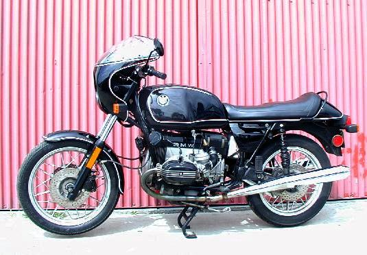

This is a picture of the motorcycle Parts Haus advertised on Ebay on 4/2/01 that so piqued my interest. Here's the text of his Ebay ad:
New paint and hand pinstriping,New seat,New windshield,New battery,New
BMW S-mirrors,Good tires,Master cylinder replaced,New steering head
bearings,Dual Brembo front brakes, Carbs rebuilt,Bike looks and runs
great,Needs riden, Summer is upon us. Can be shipped to most major cities
in a crate for $375.00 Any????? please call 562 426 3558 The Parts Haus
Bidding was set to start at $2999, but the bike didn't receive any bids.
When I spoke to Joshua at Parts Haus, he said that this is an R100RT that got converted to an S, and that it's been sitting unridden for about three years. He also said that it has either 69,000 or 70,000 miles on it (I didn't hear that part clearly, and 1000 miles doesn't make much difference at that point).
Update: (5/3/01) I've bought the bike, as later journal entries show. It's in ok shape, but had a bunch of problems I had not expected based on the ride reports I got from people in LA. Such is life.
Created by Ian Johnston. Questions? Please mail me.